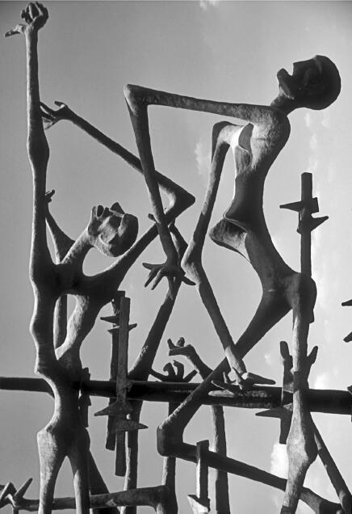

把父母的特质赋予无生命的物体（土地），也可见于另一个例子，即我们日常用语中对“房屋”（house）和“家”（home）的区分，这也影响了我们对民族的理解。“房屋”这个词对我们而言，大体指一个物理的、空间的构造。它不是家，但有可能成为家。如果“房屋”这个物理构造已经以某种方式被赋予了居住其中的人的精神、力量，甚至道德品质，我们则通常用“家”来表示；仿佛当“房屋”变成“家”以后，也成了家庭的一部分。
现代民族不仅被视为“房屋”，即一个人与人随意交往的空间环境；它也被视为“家”，是一个充满了过去和当前数代人“精神”的空间，是一个家乡，一个领地。这世代相传的精神就是传统，传统把一片空间造就成一个领地，也构建了领地内的民族关系。特定领地内的传统文化指引着参与者的行为。例如，僧伽罗人把他们的领土视为圣地斯里兰卡；林登·贝恩斯·约翰逊总统把美利坚合众国的土地描述为盟约的一方，仿佛这片土地是一个有道德水准的人。
——林登·贝恩斯·约翰逊，《行动时刻》
领地界限从来不仅仅是地理意义上的。它们表明，很多代代相传的传统是在一定空间范围内进行的。例如古希腊城邦的界限由各自庙宇里供奉的神或众神来界定，这种情况不足为奇。因此，居住在领地内的个体，不仅有相互之间的交往，还参与领地内的传统活动。这些活动又反过来影响他们的行为，包括信仰的神明、使用的语言，以及接受的法律。
领地内的习俗通过各种各样的机构得以维持，也通过沿袭这些习俗使之源远流长。爱国者组织以及各种庆祝和纪念日的活动，都标志着领地内民族关系的存在，比如美国的独立日、法国的巴士底日、英国的加冕纪念日和以色列的大屠杀纪念日。文化传承不能只被理解为像一件穿脱自如的外套，存在于个体之外。它是你对自己的认识，也是你对领地内承袭了同样传统的、密切相关的其他人的认识。
用前一章的术语来说，个体间交往所遵循的、超越了个体习惯的文化传统，以领地的形象作为概念参照。这种形象不仅在空间上范围广，而且在时间上有深度。社会关系中的个体参与者认为自己不仅与现在共同参与领地内文化传统的人密切相关，而且与过去在同一领地内从事同样活动的人密切相关。例如，虽然女王伊丽莎白一世活在400年前，今天她仍被认为是英国人。领地及其历史因而被人视为自己的东西。它属于自己，也属于那些同在这片领地内生活的人。
在一片领地上世代生息的民族共同体这一概念的关键，是拥有过去，并拥有范围广、有界限的领地。显然，并不是过去所有的活动都被视为同等重要，都像传统习俗一样被不断沿袭，并参与促进生成现在的社会关系。然而，其中一些传统被认定为决定了人的生存，其重要性得到每一代人的认可，因而这些传统得以继续“存活”。伊丽莎白一世统治时期，英格兰战胜西班牙。这一点依然很重要，因为英格兰今天的存在被视为那次胜利的结果。以色列每年都用纪念日承认大屠杀的历史，因为今天的以色列被认为是犹太人的故乡。重要的历史事件常常以纪念碑的形式体现，以诠释现代人对过去的理解。以色列耶路撒冷大屠杀纪念馆就是个例子。

图7 耶路撒冷大屠杀纪念雕塑，纪念千百万在纳粹死亡集中营中被杀害的犹太人
由于认识到人作为领地内居民和民族成员，其生命的存在有赖于缔造领地，即人的家乡的历史活动，便形成了领地内代代相传的亲属关系。这种亲属关系以历史上曾发生的事件为参照，也囊括今天相同的文化传统。